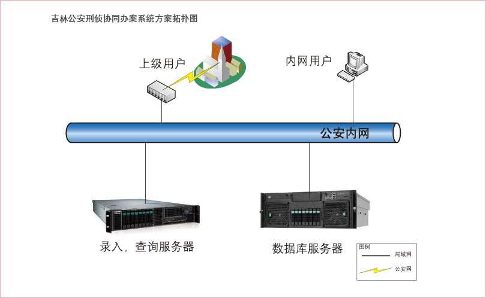
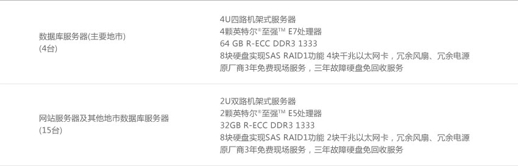

吉林省公安厅目前已经基本建成了以专业刑侦信息，社会情报信息和跨区协同信息系统为主要情报来源的大情报信息化系统。各地市(县)公安局、省公安厅均有相应的服务器及数据库系统软、硬件支撑情报录入和查询。
方案架构比较明朗，每个地市都采用两台服务器作为主要的应用服务器，其中一台服务器作为核心数据库服务器，另外一台服务器作为前端信息查询录入的网页接入服务器。由于长春、吉林、四平、延吉等地市信息量较大，所以采用四路服务器作为数据库服务器，另外的五个地市采用双路服务器作为后台数据库服务器，另外，长春市查询录入负载较大，所以采用两台双路服务器作为前端Web服务器，并且构成双机方案。
硬件部分
联想通过对公安大情报系统的深入了解，针对用户的实际情况，为用户量身打造了刑侦协同办案系统方案。通过个地市的数据信息联网及相互流通，吉林省全省各地市的案件相关情报信息得到了高效的流转和运用。联想稳定、高性能的联想ThinkServer服务器保障了数据协同办案系统应用的7*24小时在线支持，使得吉林省的公安办案效率得到了一定提升，并且为后续公安情报信息系统建设打下了坚实的IT硬件基础。